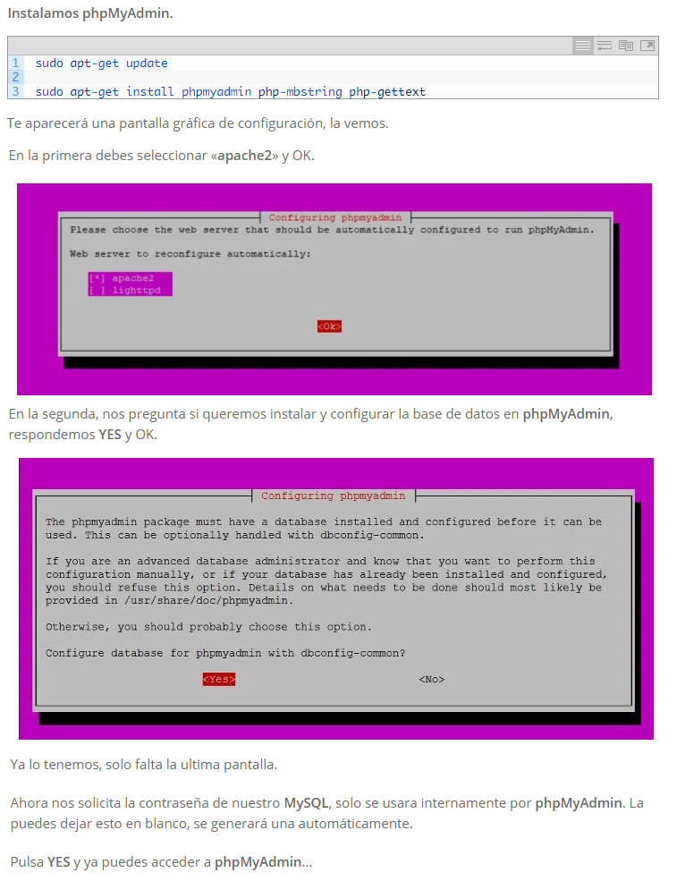
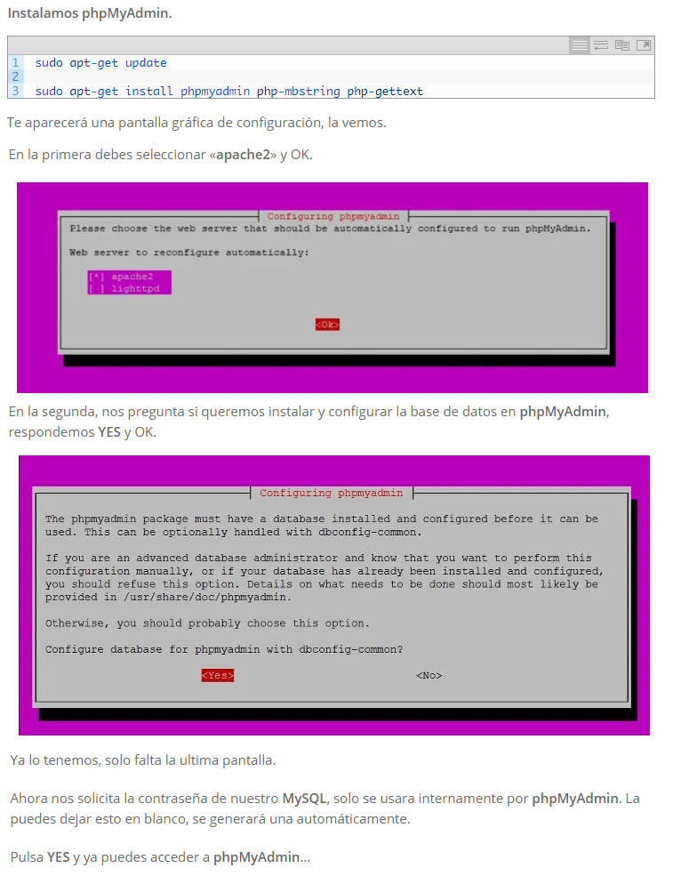

Personalmente mi computador tiene el SO Linux Mint. Se realizo la investigación e implementación de la instalación de los recursos necesarios para realizar el proyecto, los pasos son los siguientes:
Se usan de forma secuencial los siguientes comandos desde el terminal de Linux:
 

Ya tienes tu servidor LAMP listo para trabajar.